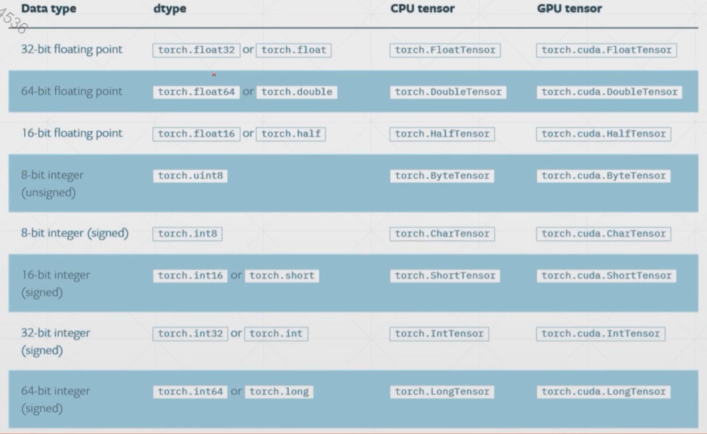
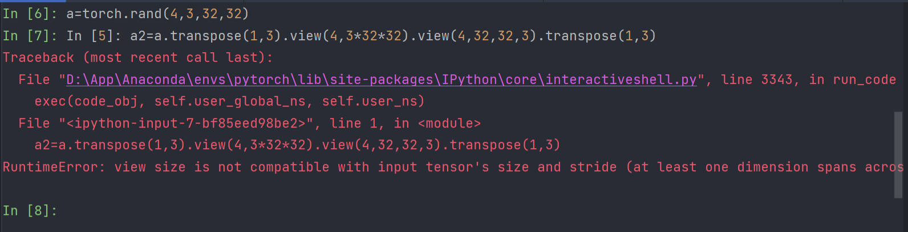

Pytorch基础
Tensor数据类型
对比
| Python | Pytorch |
|---|---|
| Int | IntTensor of size() |
| float | FloatTensor of size() |
| Int array | IntTensor of size [d1,d2,…] |
| Float array | FloatTensor of size[d1,d2,…] |
| string | – |
可以发现Pytorch并不支持string表示，但是我们可以使用如下两种方法在Pytorch 中表示string。
- One-hot
- Embedding
- Word2vec
- glove
这里不对以上两种方法展开进行讲解，大家感兴趣可以自行百度。
数据类型

最常用的一般是以下几种
- FloatTensor
- DoubleTensor
- IntTensor
- LongTensor
- ByteTensor
数据类型推断
1 | In [3]: a=torch.randn(2,3) |
- type()：打出当前tensor的数据类型
- isinstance()：检验当前数据是否为此类型
- type(xxx)：Python自带的类型检测，只能检测最基本数据类型
以下代码测试说明了，同一数据部署在CPU和GPU上数据类型是不一样的
1 | In [7]: isinstance(a,torch.cuda.FloatTensor) |
标量的表示: Dim0
1 | In [10]: torch.tensor(1.0) |
以下代码展示了shape,size(),dim()的使用方法。
其中输入19和21是常见的确定tensor维度的方法
1 | In [17]: a=torch.tensor(1.3) |
向量Vector：Dim1
一个元素的一维向量，其实就是多加了一个中括号，详情见下面的代码。
FloatTensor接收的参数是shape，然后随机初始化向量。
然后In [9]以后介绍了一种numpy转tensor的方法
1 | In [3]: torch.tensor([1.1]) |
矩阵Matrix：Dim2
1 | In [3]: a=torch.randn(2,3) |
在Pytorch中，randn是随机正态分布，而rand是随机均匀分布。
Dim3
1 | In [3]: a=torch.rand(1,2,3) |
三维的tensor一般用于RNN中
Dim4
1 | In [3]: a=torch.rand(2,3,28,28) |
numel函数的含义是number of element,返回对应tensor中元素的个数
四维的tensor一般用于CNN中
创建Tensor
从numpy中导入数据
1 | In [4]: a=np.array([2,3.3]) |
从List列表中导入数据
1 | In [3]: torch.tensor([2.,3.2]) |
注意区分大写Tensor和小写tensor，见In [3]和In [7]的区别，然后In [4]和In [5]也要进行区分。
生成未经过初始化的数据uninitalized
-
torch.empty() -
torch.FloatTensor() -
torch.IntTensor(d1,d2,d3l)
1 | In [3]: torch.empty(1) |
非常不建议直接将未初始化的Tensor带入计算，有极大概率出现奇怪的问题。这是因为未经初始化的Tensor，随机生成的数据有可能会相差较大（比如极大或者极小），上面的代码并没有出现这样的问题，可能是因为运气比较好。
empty()加不加括号都可以

设置默认数据类型
Pytorch默认的Tensor类型是FloatTensor，因此在这种情况下，使用Tensor或tensor生成的tensor的数据类型都是FloatTensor类型的。
设置Tensor默认的数据类型采用的函数是set_default_tensor_type
1 | In [3]: torch.tensor([1.2,3]).type() |
随机初始化
- rand():随机生成(0,1)之间的数（均匀分布）
- rand_like：传入参数是一个Tensor，就rand一个和传入tensor形状一样的tensor
- randint：指定最小值和最大值以及Tensor的维度信息，然后进行随机。
- randint_like：同randlike,这里不再赘述，详情见上面的
rand_like函数 - randn：随机生成(0,1)之间的数（正态分布）
- full：给定维度信息和对应的数，使用该数初始化给定维度的tensor。
1 | In [3]: torch.rand(3,3) |
arange
传入两个或三个参数，分别表示起始和终止位置（左闭右开），然后第三个参数是步长，不写就默认是1。
1 | In [3]: torch.arange(0,10) |
linspace/logspace
linspace和arange非常的像，但是第三个参数不表示步长了，而是表示的是数量，还有一个非常重要的不同是，这里的终止点是包含在了分割的序列中的。（见下面的例子）
logspace先是同linspace一样，将起始点和终止点之间的数据划分成给定数量的等差数列，然后将这些值作为指数，10作为底数（当然底数也可以自己通过改变base参数进行设置），计算出来的序列作为最后呈现的答案。
1 | In [3]: torch.linspace(0,10,steps=5) |
ones/zeros/eye
这个非常简单，大家直接看下面的例子就可以明白，这里就不再赘述。
1 | In [3]: torch.ones(3,3) |
like方法在这里也可以使用哦。比如ones_like
randperm
随机打乱函数，一般用于打乱索引编号。
1 | In [3]: idx=torch.randperm(10) |
Tensor 切片
简单切片
1 | In [3]: a=torch.rand(4,3,28,28) |
选区间
1 | In [9]: a[:2,:1,:,:].shape |
有步长的切片
1 | In [14]: a[:,:,0:28:2,0:28:2].shape |
特定索引切片
使用index_select这个函数
传入两个参数，第一个参数是一个标量表示对第几个维度进行索引操作，第二个参数是一个tensor数组，表示我们想取出来的索引号。
1 | In [21]: a=torch.eye(3) |
…
1 | In [3]: a=torch.rand(4,3,28,28) |
通过遮罩取数
使用到的函数是masked_selected，这个函数并不是非常的常用。
1 | In [3]: z=torch.randn(3,4) |
通过take来进行取数
take取数会将tensor打平然后再根据新的索引进行取数操作，详情见下面的例子。
1 | In [3]: src=torch.tensor([[4,3,5],[6,7,8]]) |
Tensor 维度变换
- view/reshape
- squeeze/unsqueeze
- transpose/t/permute
- expand/repeat
reshape/view
reshape和view是完全等价的，详情见下面的例子。
1 | In [3]: a=torch.rand(4,1,28,28) |
squeeze/unsqueeze
unsqueeze
对于一个维度为n的tensor，想要扩展维度所能够传入参数的范围是****
如果输入的是正的索引（或0）则是在之前插入，负的索引则是在之后插入
1 | In [3]: a=torch.randn(4,1,28,28) |
squeeze
1 | In [3]: b=torch.rand(1,32,1,1) |
expand/repeat
expand
这是维度扩展函数和维度增加函数还是有较大不同的，注意区分！维度增加是增加了一个新的维度，而维度扩展是将当前已有维度改变其shape的大小。
两个API所实现的功能是完全一样的，但是我们更加推荐使用第一个API，因为第一个API是在数据需要使用时才进行复制，因此expand的执行速度更快，并且更加节约内存。
只有原来维度为1，才能够被扩展！！！
如果expand中填写的参数为-1，表示的是维度大小保持不变。
1 | In [3]: a=torch.rand(1,3) |
repeat
传入的参数和expand函数有一些不同，这里所传入的参数代表拷贝的次数，比如如果原来维度大小是32，下面对应参数填写为2，最后生成的大小就是64。
1 | In [3]: a=torch.rand(1,32,1,1) |
transpose/t/permute
t
矩阵转置操作
这个函数只适用于二维tensor，其他维度的tensor使用会报错
1 | In [3]: a=torch.rand(3,4) |
transpose
矩阵维度交换函数，直接输入两个需要进行交换的维度，就可以直接将这两个维度进行交换，同时这两个维度存储的信息也会进行交换。
1 | In [3]: a=torch.rand(4,3,32,32) |
contiguous函数是使内存顺序变得连续，不然会如果有以下写法会出现报错。（因为view会忽视维度信息）

permute
和transpose比较类似，但是很好的解决了transpose每次只能交换两个维度的问题，我们输入的参数，是维度的排列顺序，这样就可以同时交换多个维度。
1 | In [3]: a=torch.rand(1,2,3,4) |
 wechat
wechat alipay
alipay